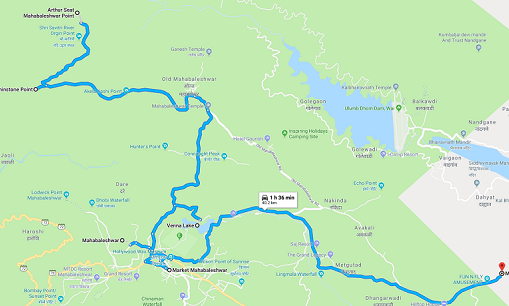

I am a passionate developer who loves to solve real world problems.
I’ve always sought out opportunities and challenges that are meaningful to me. I enjoy using
my obsessive attention to detail, my unequivocal love for coding, and my mission-driven work
ethic to literally change the world. That's why I’m excited to make a big impact at a high
growth company.
Education
PICT, Pune2014 - present
B.E. (Computer Engineering)
72.12%
Fergusson College, Pune2012 - 2014
Higher Education
87.54%
N.M.V. High School, Pune2008 - 2012
Secondary Education
88.18%
Skills
Projects

Distracted Driver Detection using Deep Learning
Tags
: Machine Learning, Deep Learning, CNN, Regression, Classification, Safety
Technologies
: Python3, Keras, Tensorflow, Jupyter Notebook, OpenCV, CUDA
One of the critical problems prevailing in India is the deaths caused by road accidents. Almost 80%
of the accidents are caused by the inattentiveness of the driver. Usage of mobile phones, talking
to passengers, reaching behind to grab something and drinking while driving are some of the reasons
due to which driver may lose attention. Distractions are of numerous types, out of which we focus
on the manual distraction which is based on the posture of the driver. In this project, we propose
a system where we make use of Convolutional Neural Networks and data augmentation techniques.
Data augmentation techniques are used to increase the variability of the dataset and decrease
overfitting. We have used the first publicly available dataset fomm Kaggle as input for our model.
Our aim was to categorize a test image into one of the nine distinct distracted states of the
driver that we have considered. Conclusively, the experimental analysis has shown that applying
data augmentation techniques, the proposed model gives better results.
Weather Induced Airline Delays Prediction
Tags
: Data mining, Machine Learning, Delay Prediction, Imbalanced Training data, Sampling,
classification
Reasons behind choosing this topic was to identify potential causes behind delays and then attain
significant operational cost savings, better flight scheduling and find ways to alleviate the
impact. The primary goal of model proposed in this Project is to predict airline delays caused
by inclement of weather conditions using data mining and supervised machine learning algorithm
(Random Forest). 2008 US domestic flight data and weather data was used for training and prediction.
After Data analysis, we learnt about various regions and duration in which flight delays occured
the most. After the analysis Random Forest was trained on available data. But more samples of
non-delayed flight data than delayed flights resulted in "Accuracy Paradox". hence to oversample
minor data we used SMOTE ( Synthetic Minority Oversampling TechniquE ). Training results after
oversampling were much better. Hence we comcluded that oversampling the dataset improves the
performance of the model.
Bounce - Desktop
Tags
: Games, Bounce, Nokia, unity3D
Technologies
: Unity, C#, JS
I have always been facinated by games. I always wanted to make my own game and Computer Graphics
Course in 2nd year of Engineering gave me the opportunity. we were asked to develop a small game
using any technology in 1 week. I came across unity3D and started developing "Bounce". It was
really the most intuitive but at the same time one of the most simple games I have every played.
Due to time constraints, I was able to make only 2 levels. Teachers were impressed by work and
asked me to put the game in the college exhibition. Response received from many viewrs was very
positive.
Twitter Bot
Tags
: Twitter, Bot, Railway, PNR, Train
Technologies
: Python, Urllib, RailwayAPI
When I was coming home from Bhopal. I wanted to check my PNR status. I had internet
on my phone but it was very slow and my phone was almost out of battery. Plus using internet, Opening the website,
entering PNR number, waiting for results was way too much work. I wondered we use social media almost
everyday. what if there was a way to check status of reservation and use the social media? that is how I came up with the
idea of making a Bot to check PNR status. I wanted to make a Whatsapp bot but it is not allowed. So
I made a twitter bot instead. All you had to do was to tweet @getMyPNRStatus < your PNR number > and the status
was retweeted as long as my bot was online. Later I added many more functionalities like Train status, timings, etc.
the results were obtainied from RailwayAPI. But it a paid service and my free trial period is now expired so in
order to use it. Log in to RailwayAPI and enter your secret keys at the places in the code.
Journey Planner
Tags
: Tourism, Shortest Distance, Journey, Google Maps, itinery
Technologies
: HTML, CSS, JS, Google Maps API
When You add multiple destinations to Google Maps. IT appends the new destination
to previous path. It does not provide shortest distance between all the destinations provided. So
I used Google Maps API and applied "Travelling Salesperson Problem" to it. Which gives smallest distance
as well as time to visit all the destinations provided. I actually used it to plan our Mahabaleshwar Trip.
Image Above is the screenshot of the same. I used my application to plan how to visit variour locations
at Mahabaleshwar And it was quite helpful.
Wall Street
Tags
: Stock Market, Buy, Sell, Stocks
Technologies
: HTML, CSS, JS, AJAX, JQuery, Php, MySQL
We developed a Virtual version stock market for event "WallStreet"
under CREDENZ' 16 using Web Technologies. The web app consisted of all basic stock market operations. People could
buy stocks, sell them, they would also get a notification for news and when their stocks sold.
More than 800 people registered for this event and throughout the event there were no bugs during
the transactions people made. We Learnt so many things like huge lines of Complex SQL queries, Transactions,
and real time updations. Many players appreciated the work we had done for the web app.